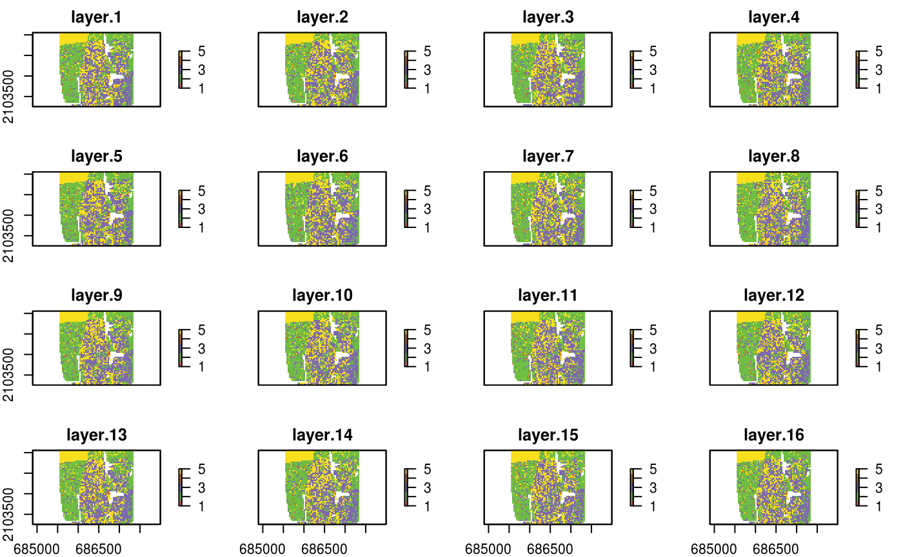
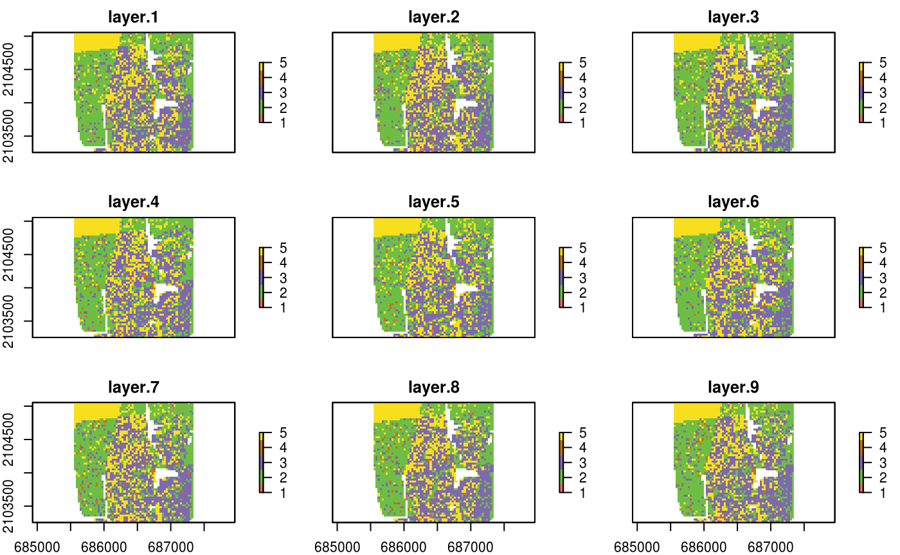
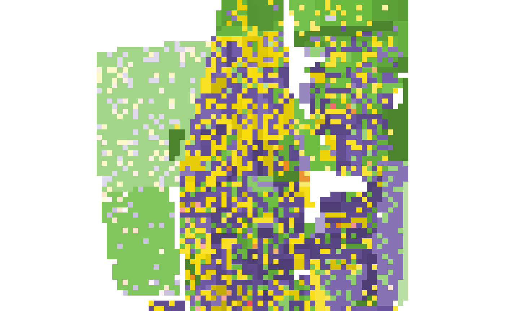
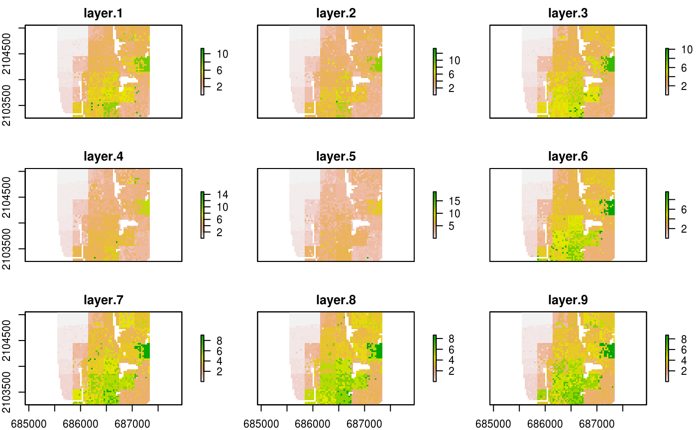

The raceland package implements a computational framework for a pattern-based, zoneless analysis, and visualization of (ethno)racial topography. It is a reimagined approach for analyzing residential segregation and racial diversity based on the concept of ‘landscape’ used in the domain of landscape ecology. A racial landscape, represented by a high-resolution raster grid with each cell containing only inhabitants of a single race, is quantified by two metrics (entropy and mutual information) derived from Information Theory concept (IT). Entropy is the measure of racial diversity and mutual information measures racial segregation.
Racial landscape method is based on the raster gridded data, and unlike the previous methods, does not depend on the division of specific zones (census tract, census block, etc.). Calculation of racial diversity (entropy) and racial segregation (mutual information) can be performed for the whole area of interests (i.e., metropolitan area) without introducing any arbitrary divisions. Racial landscape method also allows for performing calculations at different spatial scales.
Installation
You can install the development version from GitHub with:
Example

# Construct racial landscape
real_raster = create_realizations(x = race_raster, n = 100)
race_colors = c("#F16667", "#6EBE44", "#7E69AF", "#C77213","#F8DF1D")
plot(real_raster, col = race_colors, maxnl = 9)

# Calculate local subpopulation densities
dens_raster = create_densities(real_raster, race_raster, window_size = 10)
plot(dens_raster, maxnl = 9)
# Calculate IT-metrics
metr_df = calculate_metrics(x = real_raster, w = dens_raster,
neighbourhood = 4, fun = "mean",
size = NULL, threshold = 1)
head(metr_df)
#> realization row col ent joinent condent mutinf
#> 1 1 1 1 1.635906 3.168265 1.532358 0.1035477
#> 2 2 1 1 1.635434 3.132641 1.497208 0.1382257
#> 3 3 1 1 1.638882 3.175640 1.536758 0.1021242
#> 4 4 1 1 1.646665 3.179761 1.533096 0.1135696
#> 5 5 1 1 1.629344 3.149699 1.520355 0.1089894
#> 6 6 1 1 1.648589 3.191376 1.542787 0.1058016Contribution
Contributions to this package are welcome. The preferred method of contribution is through a GitHub pull request. Feel free to contact us by creating an issue.